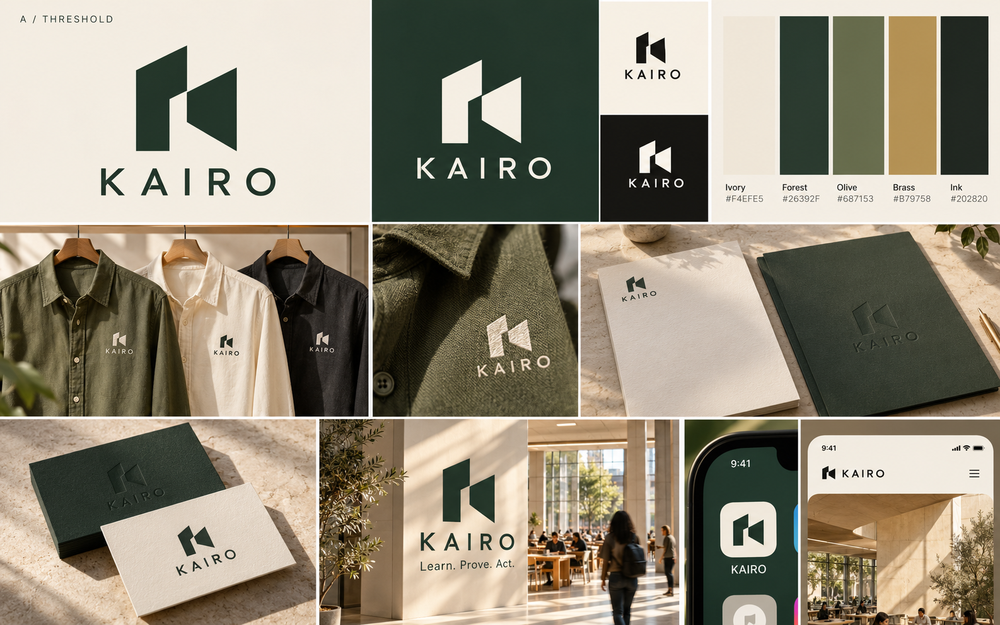
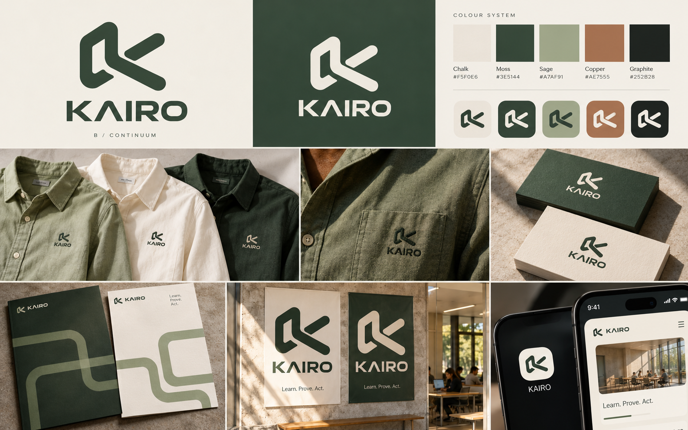
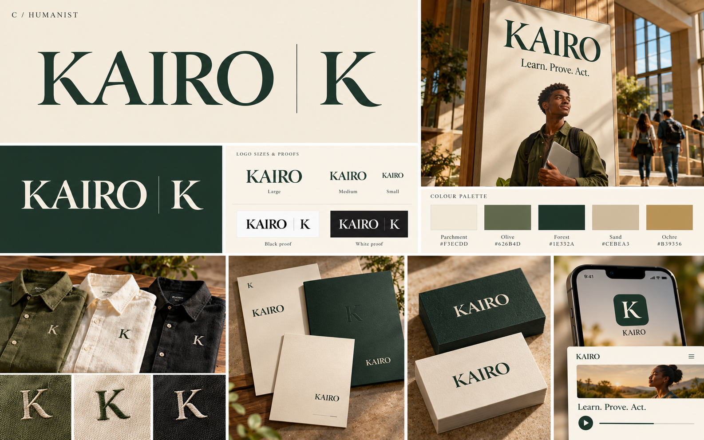

Three ways to express
what KAIRO makes possible.
Warm ivory, olive and natural materials. Distinctive marks considered across app icons, shirts, paper, cards and posters.
A / Threshold
Understanding opens a way forward. Architectural negative space and a strong spatial monogram. The most direct connection to KAIRO's interactive environments.

B / Continuum
Learning becomes action. A continuous path through learn, prove and act, with a warmer rounded mark and more energetic typography.

C / Humanist
Knowledge, expressed with warmth and authority. An editorial wordmark and restrained monogram closest to the classroom reference's visual tone.

These are image-first design directions for comparison. Generated mockup lettering/details may differ between panels. Final artwork needs vector refinement, colour/contrast and small-size proofs, font rights and originality screening. No application branding or teacher texture has been replaced.